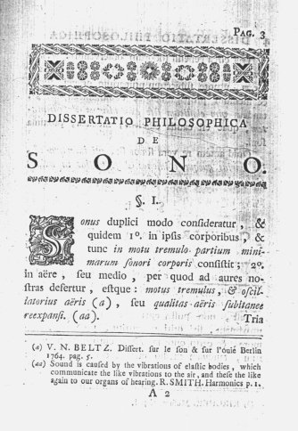

|  |
|
DISSERTATIO PHILOSOPHICA
DE
S O N O. §. I. Sonus duplici modo consideratur, & quidem 1o. in ipsis corporibus, & tunc in motu tremulo partium minimarum sonori corporis constitit; 2o. in aëre, seu medio, per quod ad aures nostras defertur, estque: motus tremulus, & oscilatorius aëris (a), seu qualitas aëris subitanee reexpansi. (aa).
(a) V.N. BELTZ. Dissertation sur le son & sur l’ouie. Berlin, 1764. pag. 5.
(aa) Sound is caused by the vibrations of elastic bodies, which communicate the like vibrations to the air, and these the like again to our organs of hearing. R. SMITH. Harmonics. p. 1. |